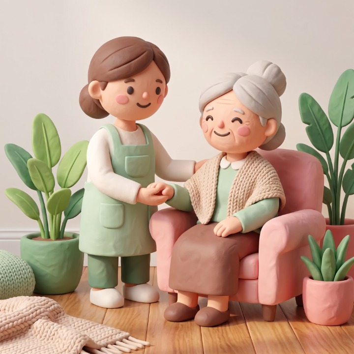
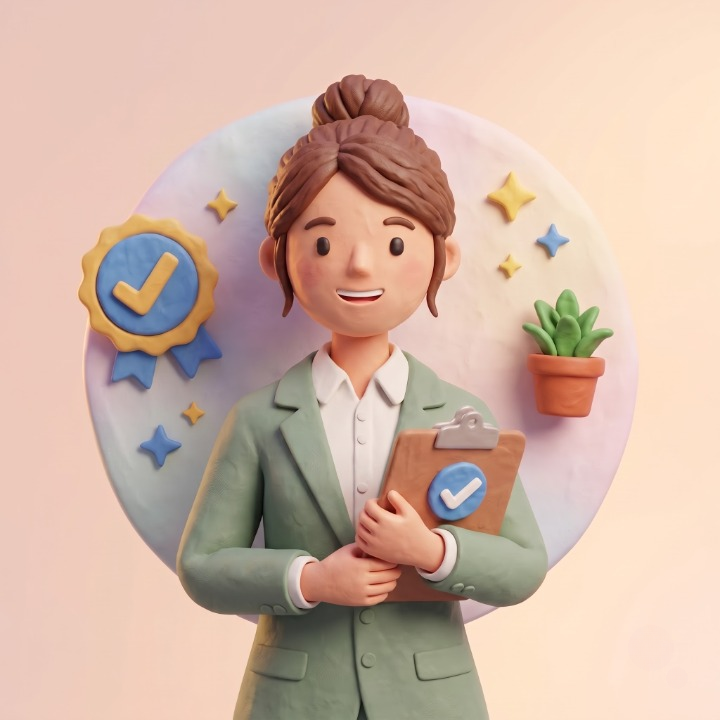
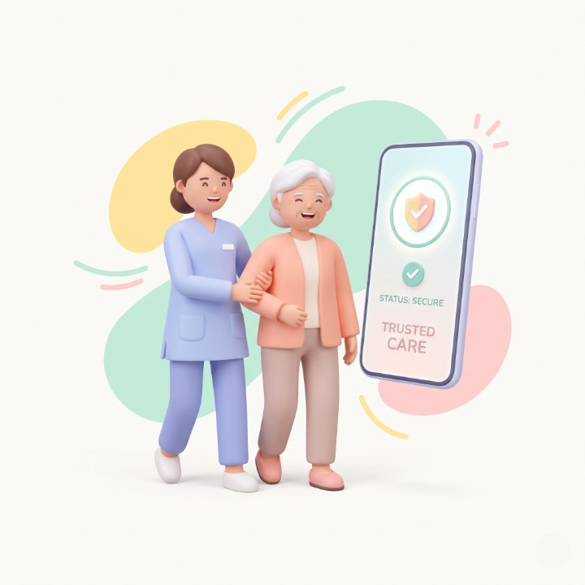

위드브릿지 소개
가족의 마음으로 함께하는 시니어 맞춤형 1:1 안심 동행 서비스
초고령화와 1인 가구 증가로 부모님의 병원 방문이나 일상생활을 매번 직접 챙기기 어려워진 보호자분들의 깊은 걱정을 덜어드리기 위해 위드브릿지가 시작되었습니다. 단순한 이동 보조를 넘어, 어르신의 건강 상황에 맞춘 맞춤형 동행으로 가장 든든한 다리(Bridge)가 되어드리겠습니다.

전문 자격 보유 매니저
실시간 안심 리포트
믿을 수 있는 위드브릿지
세 가지 약속으로 안심을 더합니다

검증된 매니저
- 엄격한 서류 검증 및 심층 면접을 통한 서비스 마인드 검증
- 간호(조무)사·사회복지사·요양보호사 등 관련 자격 및 경험 매니저 우선 매칭
- 어르신 응대 및 안전 관리 등 체계적인 사전 동행 교육 이수
품질 관리 시스템
- 병원 동행, 관공서·일상 업무 지원 등 상황별 맞춤 케어 매뉴얼 적용
- 진료 내용 정확한 전달 및 보호자 피드백 시스템 운영
- 고객 후기 및 모니터링을 통한 지속적인 서비스 품질 개선

실시간 안심 공유
- 집 앞 픽업부터 진료·업무 처리 후 귀가까지 전 과정을 실시간 알림톡으로 안내
- 보호자가 멀리 계셔도 안심할 수 있는 동행 리포트 제공
- 어르신의 일상 속 작은 불편함까지 세심하게 공유하는 맞춤형 케어
이런 분께 추천해요
위드브릿지가 꼭 필요한 순간
홀로 병원 방문
혼자 병원 방문이 부담스러운 어르신
바쁜 직장인 보호자
직장 일로 부모님 병원 동행이 어려우신 분
정기적인 통원 치료
정기 검진이나 항암·투석 치료가 필요하신 분
입·퇴원 동행
수면내시경, 입·퇴원 동행이 필요하신 분
관공서·은행 업무
관공서 및 은행 업무 처리가 거북하신 분
생필품 장보기
무거운 생필품 장보기나 외출이 힘드신 분
말벗·산책 동행
따뜻한 말벗과 산책 동행이 필요하신 분
진료·복약 안내
진료 내용과 복약 안내 전달이 필요하신 분
원거리 거주 보호자
멀리 거주하여 부모님의 일상이 걱정되시는 분